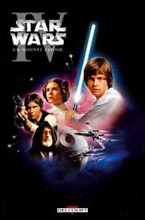
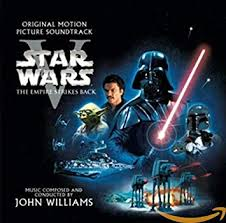
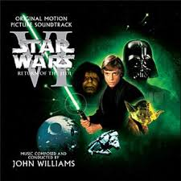

Actualités

Star Wars, épisode IV :
Un nouvel espoir
C'est le premier opus de la saga Star Wars par sa date de sortie, mais le
quatrième selon l'ordre de l'histoire. Il est le premier volet de la trilogie originale qui
est constituée également des films L'Empire contre-attaque et Le Retour du Jedi.
Année de sortie 1977

Star Wars, épisode V :
L'Empire contre-attaque
C'est le deuxième opus de la saga Star Wars par sa date de sortie, mais le
cinquième selon l'ordre de l'histoire. Il est le deuxième volet de la trilogie originale qui
est constituée également des films Un nouvel espoir et Le Retour du Jedi.
Année de sortie 1980

Star Wars, épisode VI :
Le Retour du Jedi
C'est le troisième opus de la saga Star Wars par sa date de sortie, mais le
sixième selon l'ordre de l'histoire. Il est le dernier volet de la trilogie originale qui est
constituée également des films Un nouvel espoir et L'Empire contre-attaque.
Année de sortie 1983